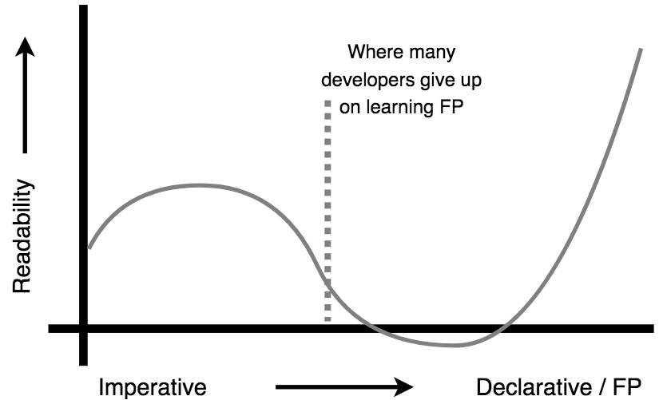

Functional-Light JavaScript
Chapter 11: Putting It All Together
By now, you have everything you need to understand Functional-Light JavaScript. There's no more new concepts to introduce.
In this final chapter, our main goal is conceptual cohesiveness. We'll look at code that brings many of the major themes from this book together -- application of what we've learned. Above all, this example code is intended to illustrate the "Functional Light" approach to JavaScript -- that is, balance and pragmatism over dogma.
You'll want to practice these techniques yourself, extensively. Digesting this chapter is critical to helping you apply FP principles to your real-world code.
Setup
Let's build a simple stock ticker widget.
Note: For reference, the entirety of the code for this example resides in
the ch11-code/ sub-directory -- see the
GitHub repository for this book.
Also, selected FP helpers we've discussed throughout this book that we need for
this example are included in ch11-code/fp-helpers.js. In this chapter we will
only focus on the relevant parts of the code for our discussion.
First, let's talk about the markup for this widget, so we have somewhere to
display our information. We start out with an empty <ul ..> element in our
ch11-code/index.html file, but while running, the DOM will be populated to
look like:
<ul id="stock-ticker">
<li class="stock" data-stock-id="AAPL">
<span class="stock-name">AAPL</span>
<span class="stock-price">$121.95</span>
<span class="stock-change">+0.01</span>
</li>
<li class="stock" data-stock-id="MSFT">
<span class="stock-name">MSFT</span>
<span class="stock-price">$65.78</span>
<span class="stock-change">+1.51</span>
</li>
<li class="stock" data-stock-id="GOOG">
<span class="stock-name">GOOG</span>
<span class="stock-price">$821.31</span>
<span class="stock-change">-8.84</span>
</li>
</ul>
Before we go any further, let me remind you: interacting with the DOM is I/O, and that means side effects. We can't eliminate these side effects, but we can limit and control them. We'll want to be really intentional about minimizing the surface area of our application that deals with the DOM. We learned all about these techniques in Chapter 5.
Summarizing our widget's functionality: the code will add the <li ..> elements
each time a new-stock event is "received", and will update the price and change
as stock-update events come through.
In the Chapter 11 example code, in ch11-code/mock-server.js, we set up some
timers to push out randomly generated fake stock data to a simple event emitter,
to simulate as if we were getting messages of stock information from a server.
We expose a connectToServer() function which pretends to do so, but really
just returns the faked event emitter instance.
Note: This file is all fake/mock behavior, so I didn't spend much effort trying to make it very FP-adherent. I wouldn't suggest spending too much time concerned with the code in this file. If you wrote a real server -- a very interesting extra credit exercise for the ambitious reader! -- you'd clearly want to give that code the FP attention it deserves.
In ch11-code/stock-ticker-events.js, we create some observables (via RxJS)
hooked up to an event emitter object. We call the connectToServer() to get
this event emitter, then listen to the event names "stock" (adding a new stock
to our ticker) and "stock-update" (updating the stock's listed price and
change amount). Finally, we define transformations on the incoming data of these
observables, formatting the data as needed.
In ch11-code/stock-ticker.js, we define our UI (DOM side effect) behavior as
methods on the stockTickerUI object. We also define a variety of helpers,
including getElemAttr(..), stripPrefix(..), and others. Finally, we
subscribe(..) to the two observables that provide us formatted data to render
to the DOM.
Stock Events
Let's look at the code in ch11-code/stock-ticker-events.js. We'll start with
some basic helpers:
function addStockName(stock) {
return setProp("name", stock, stock.id);
}
function formatSign(val) {
if (Number(val) > 0) {
return `+${val}`;
}
return val;
}
function formatCurrency(val) {
return `$${val}`;
}
These pure functions should be pretty straightforward to interpret. Recall
setProp(..) from Chapter 4 actually
clones the object before setting the new property. That exercises the principle
we saw in Chapter 6: avoiding side effects by treating values as immutable even
if they're not.
addStockName(..) is used to add a name property to a stock message object
that's equal to its id. The name value is later used as the visible stock
name in the widget.
When a stock message is received from the "server", it'll look like:
{ id: "AAPL", price: 121.7, change: 0.01 }
Prior to display in the DOM, the price needs to be formatted with
formatCurrency(..) (to look like "$121.70"), and the change needs to be
formatted with formatChange(..) (to look like "+0.01"). But we don't want to
mutate the message object, so we need a helper that formats both the numbers and
gives us a new stock object:
function formatStockNumbers(stock) {
var stockDataUpdates = [
["price", formatPrice(stock.price)],
["change", formatChange(stock.change)]
];
return reduce(function formatter(stock, [propName, val]) {
return setProp(propName, stock, val);
})(stock)(stockDataUpdates);
}
We create the stockDataUpdates array to hold tuples (just arrays) of the
property name and the new formatted value, for price and change
respectively. We reduce(..) (see Chapter 9) over that
array, with the stock object as the initialValue. We destructure the tuple
into propName and val, and then return the setProp(..) call, which returns
a new cloned object with the property having been set.
Now let's define some more helpers:
var formatDecimal = unboundMethod("toFixed")(2);
var formatPrice = pipe(formatDecimal, formatCurrency);
var formatChange = pipe(formatDecimal, formatSign);
var processNewStock = pipe(addStockName, formatStockNumbers);
The formatDecimal(..) function takes a number (like 2.1) and calls its
toFixed( 2 ) method call. We use
Chapter 9's unboundMethod(..)
to create a standalone late-bound method.
formatPrice(..), formatChange(..), and processNewStock(..) are all
compositions with pipe(..), each composing a couple of operations
left-to-right (see Chapter 4).
For creating our observables (see Chapter 10) from
our event emitter, we're going to want a helper that's a curried (see
Chapter 3) standalone of RxJS's
Rx.Observable.fromEvent(..):
var makeObservableFromEvent = curry(Rx.Observable.fromEvent, 2)(server);
This function is specified to listen to the server (event emitter), and is
just waiting for an event name string to produce its observable. We have all the
pieces in place now to create observers for our two events, and to map-transform
those observers to format the incoming data:
var observableMapperFns = [processNewStock, formatStockNumbers];
var stockEventNames = ["stock", "stock-update"];
var [newStocks, stockUpdates] = pipe(
map(makeObservableFromEvent),
curry(zip)(observableMapperFns),
map(spreadArgs(mapObservable))
)(stockEventNames);
We start with stockEventNames, an array of event names
(["stock","stock-update"]), then map(..) (see
Chapter 9) that to a list of two observables, and zip(..)
(see Chapter 9) that to a list of observable-mapper
functions, producing a list of tuples like [ observable, mapperFn ]. Finally,
we map(..) those tuples with mapObservable(..), spreading out each tuple as
individual arguments using spreadArgs(..) (see
Chapter 3).
The final result is a list of two mapped observables, which we array-destructure
into the assignments for newStocks and stockUpdates, respectively.
That's it; that's our FP-Light approach to setting up our stock ticker event
observables! We'll subscribe to these two observables in
ch11-code/stock-ticker.js.
Take a step back and reflect on our usage of FP principles here. Did it make sense? Can you see how we applied various concepts covered across the previous chapters from this book? Can you think of other ways to accomplish these tasks?
More importantly, how would you have done it imperatively, and how do you think those two approaches would have compared, broadly? Try that exercise. Write the equivalent using well-established imperative approaches. If you're like me, the imperative form will still feel more natural.
What you need to get before moving on is that you can also understand and reason about the FP-style we just presented. Think about the shape (the inputs and output) of each function and piece. Do you see how they fit together?
Keep practicing until this stuff clicks for you.
Stock Ticker UI
If you felt pretty comfortable with the FP of the last section, you're ready to
dig into ch11-code/stock-ticker.js. It's considerably more involved, so we'll
take our time to look at each piece in its entirety.
Let's start by defining some helpers that will assist in our DOM tasks:
function isTextNode(node) {
return node && node.nodeType == 3;
}
function getElemAttr(prop, elem) {
return elem.getAttribute(prop);
}
function setElemAttr(elem, prop, val) {
// !!SIDE EFFECTS!!
return elem.setAttribute(prop, val);
}
function matchingStockId(id, node) {
return getStockId(node) == id;
}
function isStockInfoChildElem(elem) {
return /\bstock-/i.test(getClassName(elem));
}
function appendDOMChild(parentNode, childNode) {
// !!SIDE EFFECTS!!
parentNode.appendChild(childNode);
return parentNode;
}
function setDOMContent(elem, html) {
// !!SIDE EFFECTS!!
elem.innerHTML = html;
return elem;
}
var createElement = document.createElement.bind(document);
var getElemAttrByName = curry(getElemAttr, 2);
var getStockId = getElemAttrByName("data-stock-id");
var getClassName = getElemAttrByName("class");
var isMatchingStock = curry(matchingStockId, 2);
These should be mostly self-explanatory.
Notice that I called out the side effects of mutating a DOM element's state. We can't as easily clone a DOM object and replace it, so we settle here for a side effect of changing an existing one. At least if we have a bug in our DOM rendering, we can easily search for those code comments to narrow in on likely suspects.
Here are some other miscellaneous helpers:
function stripPrefix(prefixRegex, val) {
return val.replace(prefixRegex, "");
}
function listify(listOrItem) {
if (!Array.isArray(listOrItem)) {
return [listOrItem];
}
return listOrItem;
}
Let's define a helper to get the child nodes of a DOM element:
var getDOMChildren = pipe(
listify,
flatMap(pipe(curry(prop)("childNodes"), Array.from))
);
First, we use listify(..) to ensure we have a list of elements (even if it's
only a single item in length). Recall
flatMap(..) from Chapter 9, which maps a
list and then flattens a list-of-lists into a shallower list.
Our mapping function here maps from an element to its childNodes list, which
we make into a real array (instead of a live NodeList) with Array.from(..).
These two functions are composed (via pipe(..)) into a single mapper function,
which is fusion (see Chapter 9).
Now, let's use this getDOMChildren(..) helper to define utilities for
retrieving specific DOM elements in our widget:
function getStockElem(tickerElem, stockId) {
return pipe(
getDOMChildren,
filterOut(isTextNode),
filterIn(isMatchingStock(stockId))
)(tickerElem);
}
function getStockInfoChildElems(stockElem) {
return pipe(
getDOMChildren,
filterOut(isTextNode),
filterIn(isStockInfoChildElem)
)(stockElem);
}
getStockElem(..) starts with the tickerElem DOM element for our widget,
retrieves its child elements, then filters to make sure we have the element
matching the specified stock identifier. getStockInfoChildElems(..) does
almost the same thing, except it starts with a stock element, and narrows with
different filters.
Both utilities filter out text nodes (since they don't work the same as real DOM nodes), and both utilities return an array of DOM elements, even if it's just a single element.
Main API
We'll use a stockTickerUI object to organize our three main UI manipulation
methods, like this:
var stockTickerUI = {
updateStockElems(stockInfoChildElemList, data) {
// ..
},
updateStock(tickerElem, data) {
// ..
},
addStock(tickerElem, data) {
// ..
}
};
Let's first examine updateStock(..), as it's the simplest of the three:
updateStock(tickerElem,data) {
var getStockElemFromId = curry( getStockElem )( tickerElem );
var stockInfoChildElemList = pipe(
getStockElemFromId,
getStockInfoChildElems
)
( data.id );
return stockTickerUI.updateStockElems(
stockInfoChildElemList,
data
);
},
Currying the earlier helper getStockElem(..) with tickerElem gives us
getStockElemFromId(..), which will receive data.id.
Via pipe(..), the return value getStockElemFromId(data.id) is an <li>
element (actually, a list containing only that element), which is passed to
getStockInfoChildElems(..).
The result is a list (stockInfoChildElemList) with the three child <span>
elements for the stock display info. We pass that list and the stock's data
message object along to stockTickerUI.updateStockElems(..) for actually
updating those three <span> elements with the new data.
Now let's look at how stockTickerUI.updateStockElems(..) is defined:
updateStockElems(stockInfoChildElemList,data) {
var getDataVal = curry( reverseArgs( prop ), 2 )( data );
var extractInfoChildElemVal = pipe(
getClassName,
curry( stripPrefix )( /\bstock-/i ),
getDataVal
);
var orderedDataVals =
map( extractInfoChildElemVal )( stockInfoChildElemList );
var elemsValsTuples =
filterOut( function updateValueMissing([infoChildElem,val]){
return val === undefined;
} )
( zip( stockInfoChildElemList, orderedDataVals ) );
// !!SIDE EFFECTS!!
compose( each, spreadArgs )
( setDOMContent )
( elemsValsTuples );
},
That's a fair bit to take in, I know. But we'll break it down statement by statement.
getDataVal(..) is bound to the data message object, having been curried
after argument-reversing, so it's now waiting for a property name to extract
from data.
Next, let's look at how extractInfoChildElemVal(..) is defined:
var extractInfoChildElemVal = pipe(
getClassName,
curry(stripPrefix)(/\bstock-/i),
getDataVal
);
This function takes a DOM element, retrieves it DOM class, strips the "stock-"
prefix from that value, then uses that resulting value ("name", "price", or
"change") as a property name to extract from the data object via
getDataVal(..).
This may seem like a convoluted way to retrieve values from the data object.
But the purpose is to be able to extract those values from data in the same
order as the <span> elements appear in the stockInfoChildElemList list; we
accomplish this by using extractInfoChildElem(..) as the mapping function over
that list of DOM elements, calling the resulting list orderedDataVals.
Next, we're going to zip the list of <span>s back with the ordered data
values, producing tuples where the DOM element and the value to update it with
are paired up:
zip(stockInfoChildElemList, orderedDataVals);
An interesting wrinkle that wasn't at all obvious up to this point is that
because of how we defined the observable's transforms, new-stock message objects
will have a name property in data to match up with the
<span class="stock-name"> element, but name will be absent on stock-update
message objects.
If the data message object doesn't have a property, we shouldn't update that
corresponding DOM element. So, we need to filterOut(..) any tuples where the
second position (the data value, in this case) is undefined:
var elemsValsTuples = filterOut(function updateValueMissing([
infoChildElem,
val
]) {
return val === undefined;
})(zip(stockInfoChildElemList, orderedDataVals));
The result after this filtering is a list of tuples (like [ <span>, ".." ])
ready for DOM content updating, which we assign to elemsValsTuples.
Note: Since the updateValueMissing(..) predicate is specified inline here,
we're in control of its signature. Instead of using spreadArgs(..) to adapt it
to spread out a single array argument as two individual named parameters, we use
parameter array-destructuring in the function declaration
(function updateValueMissing([infoChildElem,val]){ ..); see
Chapter 2 for more information.
Finally, we need to update the DOM content of our <span> elements:
// !!SIDE EFFECTS!!
compose(each, spreadArgs)(setDOMContent)(elemsValsTuples);
We iterate this elemsValsTuples list with each(..) (see
forEach(..) discussion in Chapter 9).
Instead of using pipe(..) as elsewhere, this composition uses compose(..)
(see Chapter 4) to pass
setDomContent(..) into spreadArgs(..), and then that is passed as the
iterator-function to each(..). Each tuple is spread out as the arguments to
setDOMContent(..), which then updates the DOM element accordingly.
That's two of the main UI methods down, one to go: addStock(..). Let's define
it in its entirety, then we'll examine it step by step as before:
addStock(tickerElem,data) {
var [stockElem, ...infoChildElems] = map(
createElement
)
( [ "li", "span", "span", "span" ] );
var attrValTuples = [
[ ["class","stock"], ["data-stock-id",data.id] ],
[ ["class","stock-name"] ],
[ ["class","stock-price"] ],
[ ["class","stock-change"] ]
];
var elemsAttrsTuples =
zip( [stockElem, ...infoChildElems], attrValTuples );
// !!SIDE EFFECTS!!
each( function setElemAttrs([elem,attrValTupleList]){
each(
spreadArgs( partial( setElemAttr, elem ) )
)
( attrValTupleList );
} )
( elemsAttrsTuples );
// !!SIDE EFFECTS!!
stockTickerUI.updateStockElems( infoChildElems, data );
reduce( appendDOMChild )( stockElem )( infoChildElems );
appendDOMChild( tickerElem, stockElem );
}
This UI method needs to create the bare DOM structure for a new stock element,
and then use stockTickerUI.updateStockElems(..) to update its content. First:
var [stockElem, ...infoChildElems] = map(createElement)([
"li",
"span",
"span",
"span"
]);
We create the parent <li> and the three children <span> elements, assigning
them respectively to stockElem and the infoChildElems list.
To initialize these elements with the appropriate DOM attributes, we create a list of lists-of-tuples. Each item in the main list corresponds to the four DOM elements, in order. Each sub-list contains tuples that represent attribute-value pairs to be set on each corresponding DOM element, respectively:
var attrValTuples = [
[
["class", "stock"],
["data-stock-id", data.id]
],
[["class", "stock-name"]],
[["class", "stock-price"]],
[["class", "stock-change"]]
];
We now want to zip(..) a list of the four DOM elements with this
attrValTuples list:
var elemsAttrsTuples = zip([stockElem, ...infoChildElems], attrValTuples);
The structure of this list would now look like:
[
[ <li>, [ ["class","stock"], ["data-stock-id",data.id] ] ],
[ <span>, [ ["class","stock-name"] ] ],
..
]
If we wanted to imperatively process this kind of data structure to assign the
attribute-value tuples into each DOM element, we'd probably use nested
for-loops. Our FP approach will be similar, but with nested each(..)
iterations:
// !!SIDE EFFECTS!!
each(function setElemAttrs([elem, attrValTupleList]) {
each(spreadArgs(partial(setElemAttr, elem)))(attrValTupleList);
})(elemsAttrsTuples);
The outer each(..) iterates the list of tuples, with each elem and its
associated attrValTupleList spread out as named parameters to
setElemAttrs(..) via parameter array-destructuring as explained earlier.
Inside this outer iteration "loop", the sub-list of attribute-value tuples is
iterated with an inner each(..). The inner iterator-function is an
arguments-spread (of each attribute-value tuple) for the partial-application of
setElemAttr(..) with elem as its first argument.
At this point, we have a list of <span> elements, each filled out with
attributes, but no innerHTML content. We set the data in the <span>
elements with stockTickerUI.updateStockElems(..), the same as for a
stock-update event.
Now, we need to append these <span>s to the parent <li>, and we do that with
a reduce(..) (see Chapter 9):
reduce(appendDOMChild)(stockElem)(infoChildElems);
Finally, a plain ol' DOM mutation side effect to append the new stock element to the widget's DOM:
appendDOMChild(tickerElem, stockElem);
Phew! Did you follow all that? I recommend re-reading that discussion a few times, and practicing with the code, before you move on.
Subscribing to Observables
Our last major task is to subscribe to the observables defined in
ch11-code/stock-ticker-events.js, attaching these subscriptions to the
appropriate main UI methods (addStock(..) and updateStock(..)).
First, we notice that those methods each expect tickerElem as first parameter.
Let's make a list (stockTickerUIMethodsWithDOMContext) that encapsulates the
ticker widget's DOM element with each of these two methods, via partial
application (aka, closure; see Chapter 2):
var ticker = document.getElementById("stock-ticker");
var stockTickerUIMethodsWithDOMContext = map(
pipe(partialRight, unary)(partial, ticker)
)([stockTickerUI.addStock, stockTickerUI.updateStock]);
First, we use partialRight(..) (right-partial application) on the
partial(..) utility, presetting its right-most argument to be ticker. Then
we pass this right-partially-applied partial(..) function through unary(..)
to protect it from receiving undesired extra arguments from map(..) (see
Chapter 3), via pipe(..). The result is
a mapper function which is expecting a function to partially-apply (with one
argument: ticker). We use that mapper function to map(..) the
stockTickerUI.addStock(..) and stockTickerUI.updateStock(..) functions,
respectively.
The result of map(..) is the array stockTickerUIMethodsWithDOMContext, which
holds the two partially applied functions; these two functions are now suitable
as observable-subscription handlers.
Though we're using closure to preserve the ticker state with these two
functions, in Chapter 7 we saw that we could have "kept" this
ticker value as a property on an object, perhaps via this-binding each
function to stockTickerUI. Because this is an implicit input (see
Chapter 2) and that's generally not as preferable, I
chose the closure form over the object form.
To subscribe to the observables, let's make an unbound-method helper:
var subscribeToObservable = pipe(unboundMethod, uncurry)("subscribe");
unboundMethod("subscribe") is curried so we uncurry(..) it (see
Chapter 3).
Now, we just need a list of the observables, so we can zip(..) that with the
list of DOM-bound UI methods; the resulting tuples will then include both the
observable and the listener function to subscribe to it. We process each tuple
with each(..) and use spreadArgs(..) (see
Chapter 3) to spread the tuple's
contents out as the two arguments to subscribeToObservable(..):
var stockTickerObservables = [newStocks, stockUpdates];
// !!SIDE EFFECTS!!
each(spreadArgs(subscribeToObservable))(
zip(stockTickerUIMethodsWithDOMContext, stockTickerObservables)
);
We're technically mutating the state of those observables to subscribe to them,
and moreover, we're using each(..) -- pretty much always associated with side
effects! -- so we call that out with our code comment.
That's it! Spend the same time reviewing and comparing this code to its imperative alternatives as we did with the stock ticker events discussion earlier. Really, take your time. I know it's been a lot to read, but your whole journey through this book comes down to being able to digest and understand this kind of code.
How do you feel now about using FP in a balanced way in your JavaScript? Keep practicing just like we did here!
Summary
The example code we discussed in this chapter should be viewed in its entirety, not just in the broken-out snippets as presented in this chapter. Stop right now and go read through the full files. Make sure you understand them in full context.
This example code is not meant to be prescriptive of exactly how you should write your code. It's meant to be more descriptive of how to think about and begin approaching such tasks with FP-Light techniques. It's meant to draw as many correlations between the different concepts of this book as possible. It's meant to explore FP in the context of more "real" code than we typically afford for a single snippet.
I am quite sure that as I learn FP better on my own journey, I will continue to improve how I would write this example code. What you see now is just a snapshot on my curve. I hope it will just be such for you, as well.
As we draw the main text of this book to a close, I want to remind you of that readability curve that I shared back in Chapter 1:

It's so important that you internalize the truth of that graph and set realistic expectations for yourself on this journey to learn and apply FP principles to your JavaScript. You've made it this far, and that's quite an accomplishment.
But don't stop when you dip toward that trough of despair and disenchantment. What's waiting on the other side is a way of thinking about and communicating with your code that's more readable, understandable, verifiable, and ultimately, more reliable.
I can't think of any more noble goal for us as developers to strive toward. Thanks for sharing in my journey to learn FP principles in JavaScript. I hope your experience is as rich and hopeful as mine!